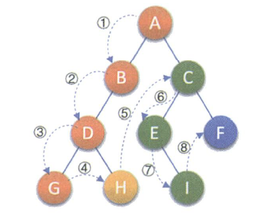
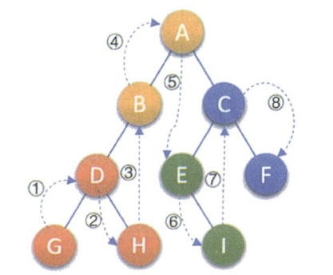
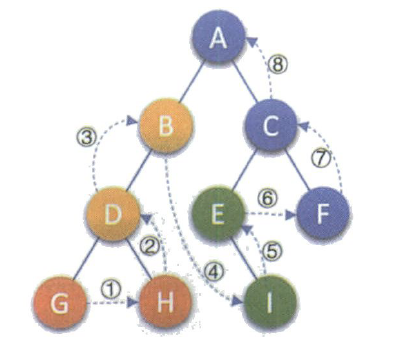
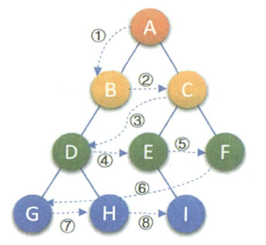

剑指offer07题解
题目
输入某二叉树的前序遍历和中序遍历的结果，请构建该二叉树并返回其根节点。
假设输入的前序遍历和中序遍历的结果中都不含重复的数字。
示例 1:
Input: preorder = [3,9,20,15,7], inorder = [9,3,15,20,7]
Output: [3,9,20,null,null,15,7]示例 2:
Input: preorder = [-1], inorder = [-1]
Output: [-1]限制：
0 <= 节点个数 <= 5000
PS：二叉树结构
1 | // Definition for a binary tree node. |
题解
知识点补充
this指针
this指针是在类内部使用，当在类的非静态成员函数中访问类的非静态成员的时候，编译器会自动将对象本身的地址作为一个隐含参数传递给函数。this指针指向用来调用成员函数的对象（this被作为隐藏参数传递的方法）。
this指针的使用：一种情况就是，在类的非静态成员函数中返回类对象本身的时候，直接使用 return *this；另外一种情况是当参数与成员变量名相同时，如this->n = n （不能写成n = n）。（后者便是本题中的使用场景）
CSDN看到一个有趣的比喻：当你进入一个房子后，你可以看见桌子、椅子、地板等，但是房子你是看不到全貌了。对于一个类的实例来说，你可以看到它的成员函数、成员变量，但是实例本身呢？this是一个指针，它时时刻刻指向你这个实例本身。
new
new operator是指new操作符，分为两个阶段的操作：1.operator new：申请内存；2.调用类的构造函数
如何准确写一个递归（参考：代码随想录）
递归算法的三个要素：
- 确定递归函数的参数和返回值： 确定哪些参数是递归的过程中需要处理的，那么就在递归函数里加上这个参数， 并且还要明确每次递归的返回值是什么进而确定递归函数的返回类型。
- 确定终止条件： 写完了递归算法, 运行的时候，经常会遇到栈溢出的错误，就是没写终止条件或者终止条件写的不对，操作系统也是用一个栈的结构来保存每一层递归的信息，如果递归没有终止，操作系统的内存栈必然就会溢出。
- 确定单层递归的逻辑： 确定每一层递归需要处理的信息。在这里也就会重复调用自己来实现递归的过程。
二叉树的遍历
二叉树的遍历是指从根结点出发按照某种次序依次访问二叉树中的所有结点使得每个结点被访问一次且仅被访问一次。
1.前序遍历：:规则是若二叉树为空，则空操作返回；否则先访问根结点，然后前序遍历左子树，再前序遍历右子树。如下图所示，遍历的‖顶序为ABDGHCEIF。
2.中序遍历规则是若树为空，则空操作返回，否则从根结点开始（注意并不是先访问根结点），中序遍历根结点的左子树，然后是访问根结点，最后中序遍历右子树。如下图所示，遍历的顺序为GDHBAEICF。
3.后序遍历规则是若树为空，则空操作返回，否则从左到右先叶子后结点的方式遍历访问左右子树，最后是访问根结点。如下图所示，遍历的顺序为GHDBIEFCA。
4.层序遍历规则是若树为空，则空操作返回，否则从树的第一层，也就是根结点开始访问，从上而下逐层遍历，在同一层中，按从左到右的顺序对结点逐个访问。如下图所示，遍历的顺序为ABCDEFGHI。
思路
从题干看，我们需要实现的就是由某二叉树的前序遍历和中序遍历推出二叉树的结构，并返回根节点！简而言之“前序遍历+中序遍历->二叉树结构”。
前序遍历首元素为树的根节点root，由根节点的值找到其在中序遍历中的位置（用索引index）。中序遍历的特点是“左根右”，所以中序遍历中index左侧为左子树，右侧为右子树。将原左子树独立成新二叉树看，前序遍历root+1，便是左子树的根节点值，再确定indx值，找到左、右子树部分。原右子树同理。很显然我们可以用递归实现重构二叉树。
1.前序遍历的首元素为树的根节点 root的值。
2.在中序遍历中搜索根节点root 的索引index，可将中序遍历划分为 **[左子树|根节点|右子树]**。
3.根据中序遍历中的左（右）子树的节点数量，可将前序遍历划分为**[根节点|左子树|右子树]**

我们参考知识点补充中说到的如何准确写一个递归中方法，开始写递归。
1.递归参数:
（1）根节点root的值:前序遍历的作用就是为了找根节点，确定了根节点的值才能在中序遍历中划分出左、右子树。左子树的根节点索引（前序遍历中）root+1；右子树的根节点索引（前序遍历中）index-left+root+1(根节点索引+左子树长度+1).
划分左、右边界是为了将二叉树的某一部分独立成一个二叉树去进行递归操作
（2）子树在中序遍历中的左边界left：左子树的左边界索引（中序遍历中）为left；右子树的左边界索引（中序遍历中）为index+1。（3）子树在中序遍历中的右边界right：左子树的左边界索引（中序遍历中）为index+1；右子树的右边界索引（中序遍历中）为right。
2.终止条件：
当left>right，表示已经到达叶子节点后，此时返回NULL。
3.单层递归逻辑：
（1）建立根节点node：节点值为preorder[root];
（2）划分左、右子树：确定根节点在中序遍历中的下标index（用哈希表）；
（3）构建左、右子树：开启左、右子树递归。
代码
1 | /* |
总结
这部分放一些我看这个题的思考过程吧，以及对题解的梳理和反思文字比较口语化和简陋。
自问自答
为什么遍历？因为寻找根节点及其对应左右子树的过程向下延伸都是一样的。
遍历返回的是什么？返回的是重构后二叉树的根节点。随着递归的返回，各重构左右子树组成完整二叉树。
索引梳理
先序： 根 左 右 索引 ：root 递归参数：左子树根：root+1 右子树根：root+(idx-left)+1
中序： 左 根 右 索引 ：left idx right 递归参数：左子树：left~ idx-1 右子树：idx+1 ~right
前序遍历 中的root 作用单纯为了找 根节点
建立哈希表 确定根节点在中序中的索引
题后反思
要想把这题吃透，需要搞清楚的知识点还不少。最直观的是二叉树的深度遍历，明白前序遍历、中序遍历原理。其次是如何准确写出一个递归，上文也以细说其步骤，最后就不赘述了；这题还有个难点就是索引因为本题中有涉及到多个索引的变化，需要搞清楚递归参数的实质，才能弄懂索引的变化！


微信号:Shaun_cy
QQ号:1207444851